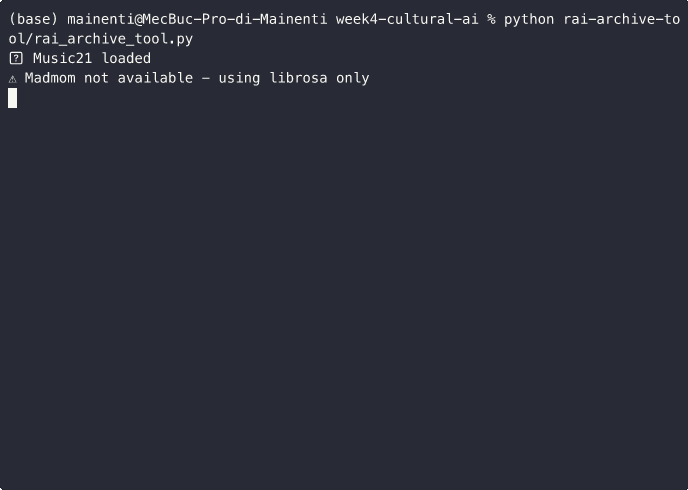

Progetti
MOOD: Adaptive Artistic Environment
Sistema AI full-stack che analizza l'ambiente (persone, movimento, audio) per controllare dinamicamente installazioni artistiche tramite OSC/ArtNet.
Stack Tecnologico:
Tags:
(Nota: Il repository completo non è pubblico. Lo showcase illustra i componenti chiave.)
Audio AI Projects
Collezione di librerie e modelli per l'analisi e la sintesi audio-reattiva tramite deep learning, inclusi classificazione di eventi sonori e generazione di texture.
Stack Tecnologico:
Tags:
Live Demos:
Batch Processor
Ideale per la preparazione di dataset per il machine learning, questo script Python automatizza task ripetitivi come il resampling, la normalizzazione del volume, il trimming del silenzio e l'estrazione di feature (es. MFCC, spettrogrammi). L'utente può definire una catena di processi tramite un file di configurazione, rendendo lo strumento estremamente flessibile per ottimizzare i flussi di lavoro di data preparation.

Demo Week 4
Integrazione Archivio RAI
Sfruttando l'API del tool, lo script non si limita al download, ma arricchisce i contenuti con metadati, segmenta l'audio per identificare parlato/musica e applica modelli di speech-to-text per la trascrizione. Questo permette di rendere l'archivio ricercabile e di analizzare grandi quantità di dati audio, trasformando il materiale grezzo in informazione strutturata.
Comando:
python rai-archive-tool/rai_archive_tool.pyEsempio 2: [Nome Esempio 2]
Qui puoi aggiungere la descrizione del secondo tool o esperimento della settimana 4.
Sistema Audio Interattivo per il MAXXI
Un sistema audio AI in tempo reale progettato per il museo MAXXI. Superando il concetto di passiva audioguida, il sistema traccia i movimenti dei visitatori e adatta dinamicamente l'ambiente sonoro (musica, narrazioni) per creare un'esperienza immersiva e personalizzata. Il progetto include anche una dashboard per i curatori che analizza i dati di affluenza, offrendo insight preziosi per l'allestimento e trasformando l'installazione in un prodotto B2B per il settore museale.